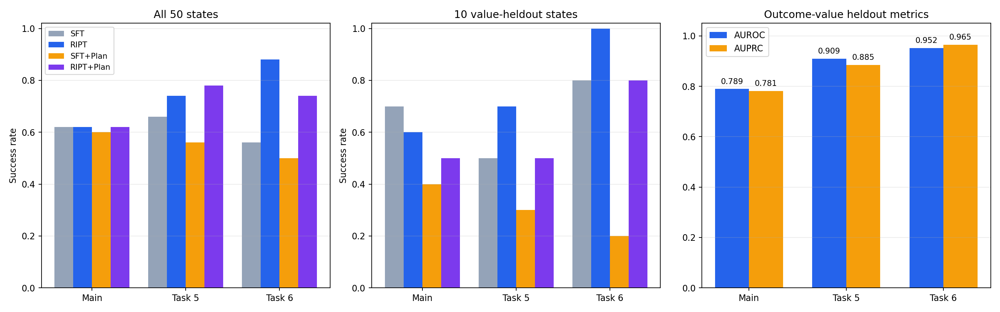
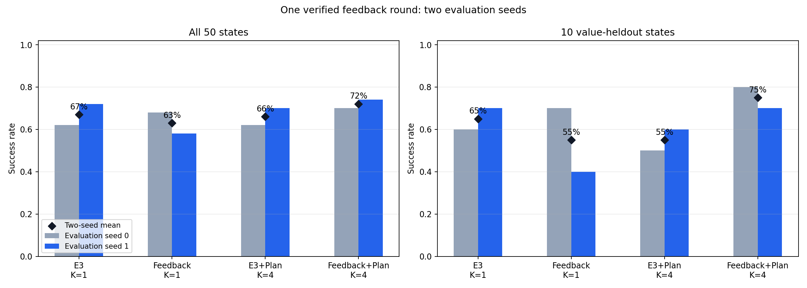
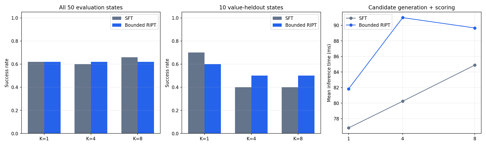
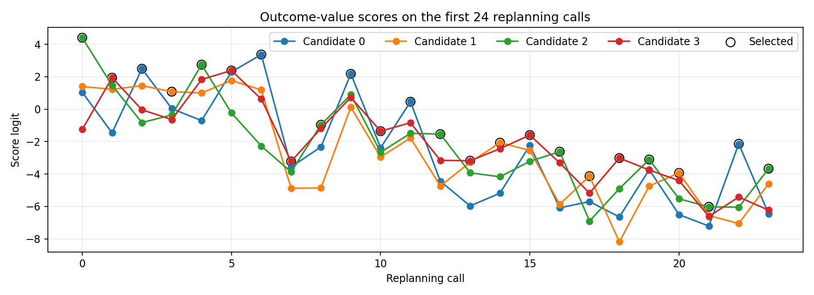
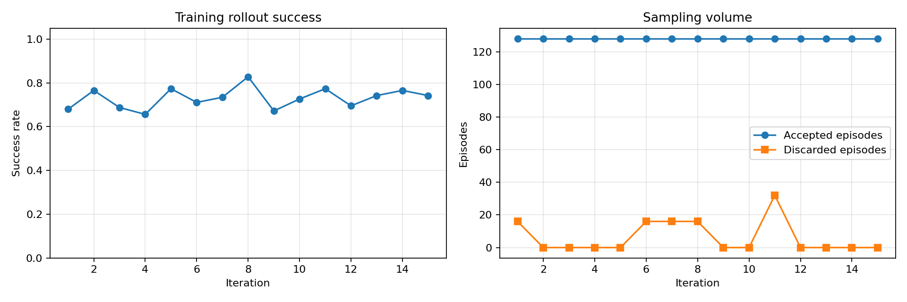
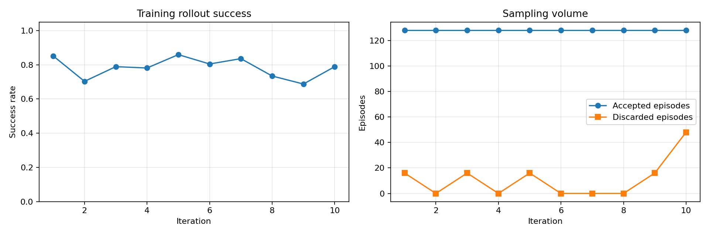
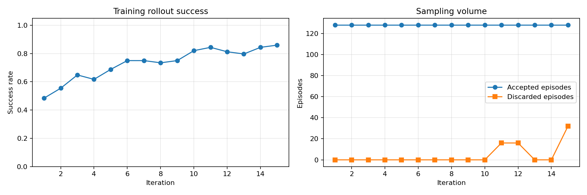

01 · 三任务主结果
RIPT 宏平均从 61.3% 提升至 74.7%
每个任务使用一个策略训练 seed 和 50 个固定初始状态。主任务采用本轮 K=1 受控口径，与早期单任务历史评估分开。
| 任务 | SFT | 有界 RIPT | SFT＋规划 | RIPT＋规划 |
|---|---|---|---|---|
| 主任务 | 31/50（62.0%） | 31/50（62.0%） | 30/50（60.0%） | 31/50（62.0%） |
| 任务 5 | 33/50（66.0%） | 37/50（74.0%） | 28/50（56.0%） | 39/50（78.0%） |
| 任务 6 | 28/50（56.0%） | 44/50（88.0%） | 25/50（50.0%） | 37/50（74.0%） |
| 宏平均 | 61.3% | 74.7% | 55.3% | 71.3% |

02 · 留出状态
规划的收益没有迁移到价值留出状态
最后 10 个初始状态不参与价值模型训练或回流。三个任务的 RIPT＋Planning 均低于对应 RIPT，不能选择性使用 Task 5 的全量 78% 作为普遍结论。
| 任务 | SFT | 有界 RIPT | SFT＋规划 | RIPT＋规划 |
|---|---|---|---|---|
| 主任务 | 7/10（70.0%） | 6/10（60.0%） | 4/10（40.0%） | 5/10（50.0%） |
| 任务 5 | 5/10（50.0%） | 7/10（70.0%） | 3/10（30.0%） | 5/10（50.0%） |
| 任务 6 | 8/10（80.0%） | 10/10（100.0%） | 2/10（20.0%） | 8/10（80.0%） |
| 宏平均 | 66.7% | 76.7% | 30.0% | 60.0% |
03 · 一轮经验回流
组合方法改善，回流单独使用并未改善
回流使用 21 条仿真确认成功的规划轨迹、843 个动作块，微调 2 个 epoch。下表同时给出两个评估 seed 和留出均值。
| 模型与方式 | seed 0 | seed 1 | 全量均值 | 留出均值 |
|---|---|---|---|---|
| 原 E3，K=1 | 62% | 72% | 67.0% | 65.0% |
| 回流，K=1 | 68% | 58% | 63.0% | 55.0% |
| 原 E3＋规划，K=4 | 62% | 70% | 66.0% | 55.0% |
| 回流＋规划，K=4 | 70% | 74% | 72.0% | 75.0% |

04 · 价值模型与规划消融
排序能力存在，但不等于在线规划收益
三个任务专属价值模型均有可测量的留出排序能力；K=1/4/8 对照用于分析候选数量和实际执行收益。
| 任务 | AUROC | AUPRC | Brier |
|---|---|---|---|
| 主任务 | 0.7893 | 0.7811 | 0.2360 |
| 任务 5 | 0.9094 | 0.8846 | 0.1359 |
| 任务 6 | 0.9519 | 0.9653 | 0.0893 |


05 · 训练过程
训练曲线与采样量同时公开
训练期 rollout 成功率只用于观察过程，不替代最终独立评估。蓝色为接受轨迹，橙色为动态采样丢弃轨迹。



06 · 如何理解这些数字
结果可以支持什么，不能支持什么
可以支持
单卡完成真实 RIPT；两个扩展任务明显提升；价值模型具有留出排序能力；回流与规划组合在两个评估 seed 上呈正向。
需要保留
规划在三任务留出状态均未改善；回流单独使用退化；评估存在波动；Task 5 为两阶段恢复训练。
不能外推
不能宣称跨训练 seed 稳定提升、完整 Q-Planning 复现、SOTA、RoboTwin 或真机效果。